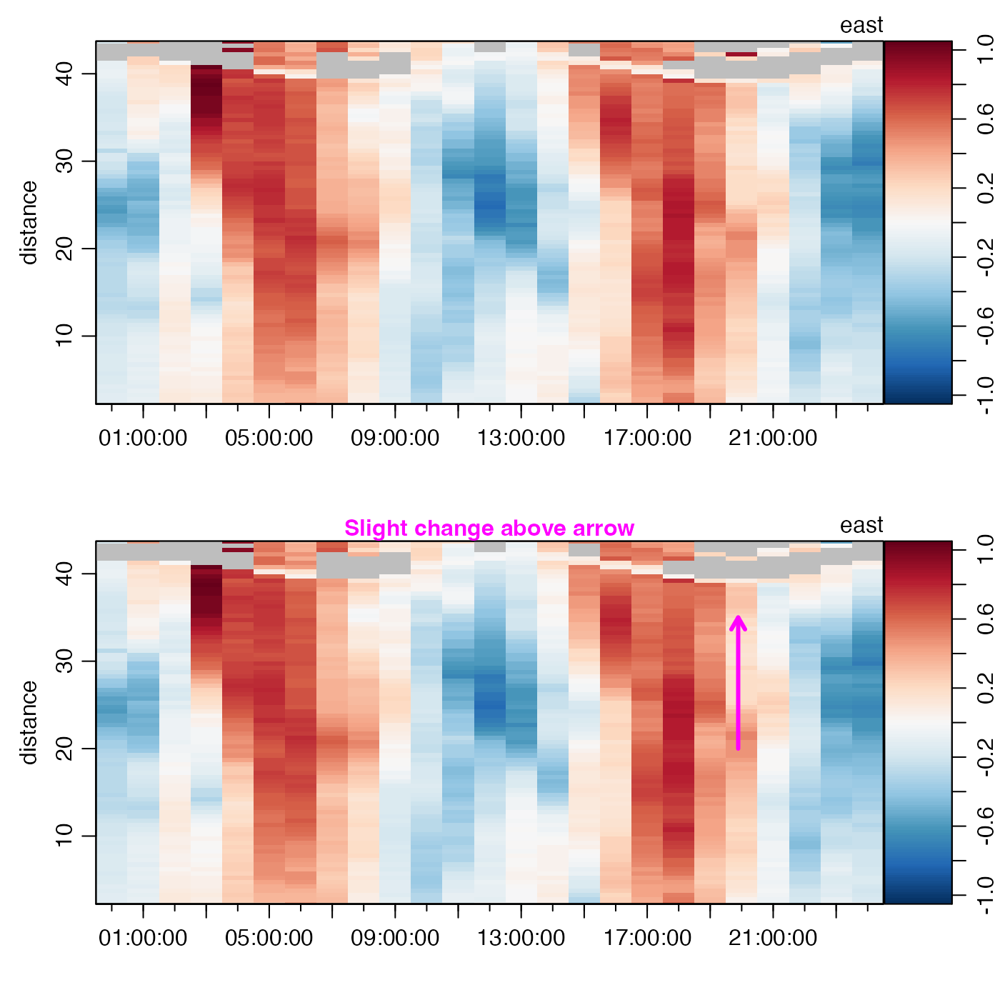

Data-quality flags are stored in the metadata
slot of oce objects in a
list named flags.
The present function (a generic that has specialized versions
for various data classes) provides a way to
manipulate the contents of the data slot, based on
such data-quality flags. For example, a common operation is to replace
erroneous data with NA.
If metadata$flags in the first argument
is empty, then that object is returned, unaltered.
Otherwise, handleFlags analyses the data-quality flags within
the object, in context of the flags argument, and then interprets
the action argument to select an action that is to be applied
to the matched data.
# S4 method for adp handleFlags( object, flags = NULL, actions = NULL, where = NULL, debug = getOption("oceDebug") )
| object | an adp object. |
|---|---|
| flags | A list specifying flag values upon which actions will be taken. This can take two forms.
If |
| actions | an optional list that contains items with
names that match those in the |
| where | an optional character value that permits the function to work with
objects that store flags in e.g. |
| debug | An optional integer specifying the degree of debugging, with
value 0 meaning to skip debugging and 1 or higher meaning to print some
information about the arguments and the data. It is usually a good idea to set
this to 1 for initial work with a dataset, to see which flags are being
handled for each data item. If not supplied, this defaults to the value of
|
If flags and actions are not provided, the
default is to consider a flag value of 1 to indicate bad data,
and 0 to indicate good data. Note that it only makes sense to use
velocity (v) flags, because other flags are, at least
for some instruments, stored as raw quantities, and such
quantities may not be set to NA.
Other functions relating to data-quality flags:
defaultFlags(),
handleFlags,argo-method,
handleFlags,ctd-method,
handleFlags,oce-method,
handleFlags,section-method,
handleFlags(),
initializeFlagScheme,ctd-method,
initializeFlagScheme,oce-method,
initializeFlagScheme,section-method,
initializeFlagSchemeInternal(),
initializeFlagScheme(),
initializeFlags,adp-method,
initializeFlags,oce-method,
initializeFlagsInternal(),
initializeFlags(),
setFlags,adp-method,
setFlags,ctd-method,
setFlags,oce-method,
setFlags()
Other things related to adp data:
[[,adp-method,
[[<-,adp-method,
ad2cpHeaderValue(),
adp-class,
adpEnsembleAverage(),
adp_rdi.000,
adp,
as.adp(),
beamName(),
beamToXyzAdpAD2CP(),
beamToXyzAdp(),
beamToXyzAdv(),
beamToXyz(),
beamUnspreadAdp(),
binmapAdp(),
enuToOtherAdp(),
enuToOther(),
is.ad2cp(),
plot,adp-method,
read.adp.ad2cp(),
read.adp.nortek(),
read.adp.rdi(),
read.adp.sontek.serial(),
read.adp.sontek(),
read.adp(),
read.aquadoppHR(),
read.aquadoppProfiler(),
read.aquadopp(),
rotateAboutZ(),
setFlags,adp-method,
subset,adp-method,
subtractBottomVelocity(),
summary,adp-method,
toEnuAdp(),
toEnu(),
velocityStatistics(),
xyzToEnuAdpAD2CP(),
xyzToEnuAdp(),
xyzToEnu()
# Flag low "goodness" or high "error beam" values. library(oce) data(adp) # Same as Example 2 of ?'setFlags,adp-method' v <- adp[["v"]] i2 <- array(FALSE, dim=dim(v)) g <- adp[["g", "numeric"]] # Thresholds on percent "goodness" and error "velocity" G <- 25 V4 <- 0.45 for (k in 1:3) i2[,,k] <- ((g[,,k]+g[,,4]) < G) | (v[,,4] > V4) adpQC <- initializeFlags(adp, "v", 2) adpQC <- setFlags(adpQC, "v", i2, 3) adpClean <- handleFlags(adpQC, flags=list(3), actions=list("NA")) # Demonstrate (subtle) change graphically. par(mfcol=c(2, 1)) plot(adp, which="u1") plot(adpClean, which="u1")